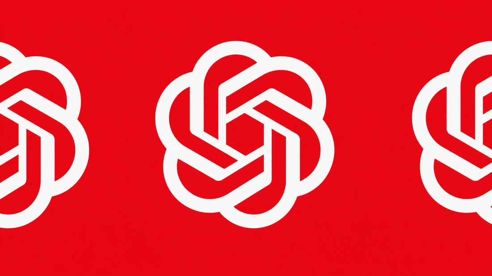

OpenAI Models Squeeze a Year of Chip Progress Into Five Months on AMD's Flagship GPU
OpenAI said on November 18, 2026 that its models improved AMD's flagship GPU design by up to 14 percent in power, performance and area in less than five months, against baselines AMD engineers had spent years optimizing, and AMD has already put some of the changes into a design sent for manufacturing. The same approach cut standard-cell area by about 13 percent in Jalapeño's vector unit, proven in silicon, and GPT-6.2 Astra topped OpenAI's RISC-V chip-design benchmarks. OpenAI is also partnering with Synopsys to train GPT-Synopsys, a model that uses Synopsys design tools the way expert engineers do.

- 01THE START — OpenAI engineers began using GPT-4o to help design Jalapeño, the company's first custom inference chip, in early 2025. Even that early model found nontrivial power, performance and area improvements in the chip's vector and matrix units.
- 02THE AMD RESULT — On November 18, 2026, OpenAI published "Advancing chip design with OpenAI models," reporting up to 14 percent power, performance and area improvement on AMD's flagship GPU IP in less than five months, and single-digit percentage gains across key blocks of AMD's next-generation flagship CPU.
- 03THE MANUFACTURING — AMD has already included some of the model-proposed changes in a recent design it sent for manufacturing, and added others to its production design files for future versions. The Jalapeño gains were proven in silicon during the chip's bring-up.
WHAT HAPPENEDWhat Happened
OpenAI said on November 18, 2026 that its models improved AMD's flagship GPU design by up to 14 percent in power, performance and area, against baselines AMD engineers had already spent years optimizing. The work took less than five months, which OpenAI called roughly a year of progress, and AMD has already folded some of the model-proposed changes into a design it recently sent for manufacturing.
The models rewrote the code that describes the chip's circuits, SystemVerilog RTL, and used Synopsys tools to verify that each rewrite preserved the block's behavior before weighing the trade-offs in power, performance and area. OpenAI said the model reasoned about RTL at the level of an expert microarchitect. AMD also verified single-digit percentage gains in power, performance and area across key blocks of its upcoming next-generation flagship CPU using designs written by the model.
The same approach had already paid off inside OpenAI. On Jalapeño, the company's first custom inference chip, model-proposed changes cut standard-cell area by about 13 percent in the vector unit and 10 percent in the matrix unit, gains OpenAI says were proven in silicon during the chip's bring-up. One multiplier redesign used about 15 percent less cell area while cutting latency from two clock cycles to one.
OpenAI also published benchmark evidence for the capability. Across 9,881 scored runs on two open-source 32-bit RISC-V cores, PicoRV32 and Ibex, GPT-6.2 Astra had the highest average score at a comparable budget of about 112,000 tokens per run, on both improving an existing core and designing one from written requirements. To push the work further, OpenAI is partnering with Synopsys to train GPT-Synopsys, a model that uses Synopsys electronic design automation tools the way expert chip designers do.
WHY IT MATTERSThe model is now designing the hardware it runs on
The loop is the story. The same models that train on AMD and Nvidia silicon are now rewriting the circuits of the next generation of that silicon, and the gains are measured against baselines that human experts had already optimized for years. A 14 percent best-case improvement in under five months, with changes already in a design sent to manufacturing, is not a demo result. It is production hardware carrying model-written logic.
The timing sharpens the point. Anthropic told IPO investors on November 10 that its Claude Mythos model brought up prompt processing on AMD MI355X GPUs in about three days, work it says used to take six to 12 months, though that figure covers prefill for one model and has not been independently verified. Two rival labs are now racing to show that AI can break the software and hardware bottlenecks that have protected incumbents, Nvidia's CUDA on one side, the human chip-design bottleneck on the other.
WHAT TO WATCHWhat to watch next
The first test is silicon. AMD's next-generation flagship GPU and CPU will carry model-written blocks, and their measured performance against the heavily optimized baselines will show whether the 14 percent best case holds outside the lab. The second is GPT-Synopsys: if a model trained on Synopsys tools can do this work inside the toolchains chip designers already use, the capability spreads from two labs to the whole industry.
The third is the competitive response. Nvidia has long used its own AI to write kernels, and the question is whether model-written chip design becomes a shared capability or another front in the labs' fight over who controls the hardware stack. OpenAI's warrants for up to 160 million AMD shares mean it has a direct financial interest in AMD's success, so independent confirmation from AMD's engineers will carry weight.
SIGNAL JUDGMENT — ANALYSISThe loop closes: AI is now designing its own hardware
Tokenta Signal's judgment: the headline number matters less than where it landed. Model-written logic is already inside a design AMD sent for manufacturing, and the same workflow produced silicon-proven gains on OpenAI's own chip. Chip design was one of the last engineering crafts assumed to be safe from automation because the cost of a mistake is a ruined tape-out. OpenAI is claiming the models can now do the expert work and prove it with the industry's own verification tools. If the silicon confirms it, the bottleneck in AI progress moves one step further up the stack, from who can buy chips to who can design them fastest.
WHAT REMAINS UNCERTAINWhat Remains Uncertain
EVIDENCEEvidence
OpenAI said on November 18, 2026 that its models improved AMD's flagship GPU design by up to 14 percent in power, performance and area in less than five months, and that AMD has already included some of the changes in a design sent for manufacturing. The same approach cut standard-cell area by about 13 percent in the vector unit of OpenAI's Jalapeño inference chip, proven in silicon.
PRIMARY SOURCESPrimary Sources
- OpenAI: Advancing chip design with OpenAI models
https://openai.com/index/advancing-chip-design-with-our-models/ - The Decoder: OpenAI says its models delivered a year's worth of chip optimization on top of AMD's own engineering
https://the-decoder.com/openai-says-its-models-delivered-a-years-worth-of-chip-optimization-on-top-of-amds-own-engineering/ - AIletter: OpenAI says its models improved AMD's flagship GPU design by up to 14%, 'roughly a year of progress' in under five months
https://ailetter.ai.kr/en/d/2026-11-18/11